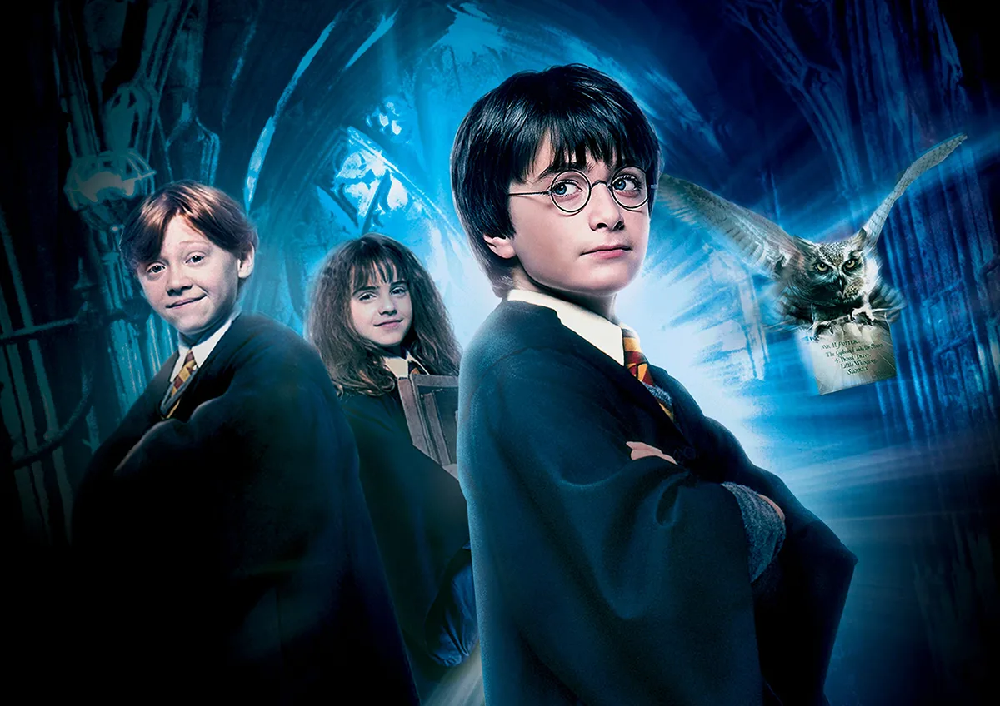
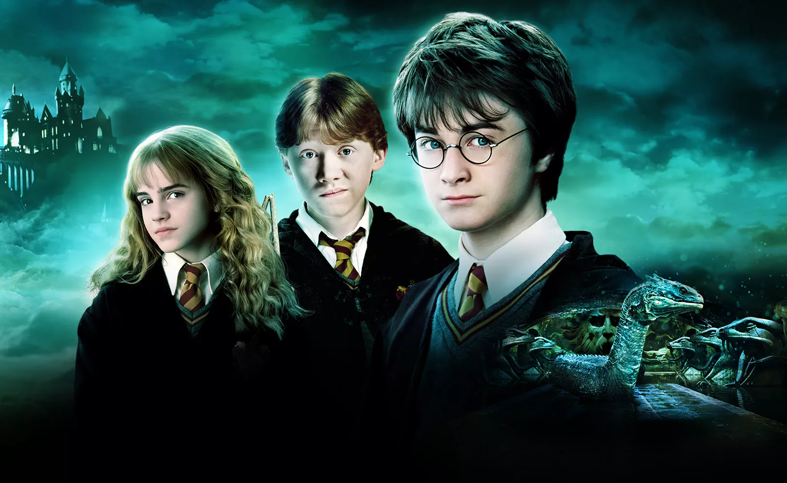
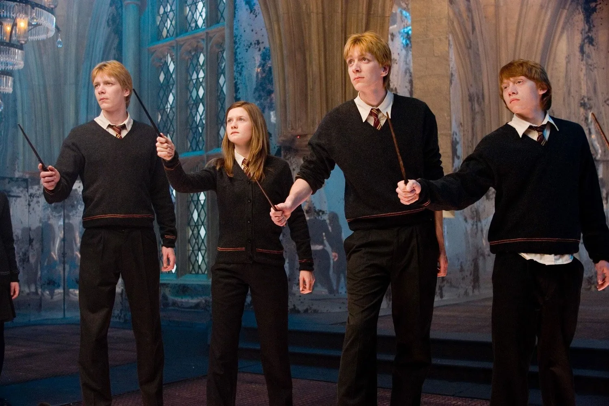
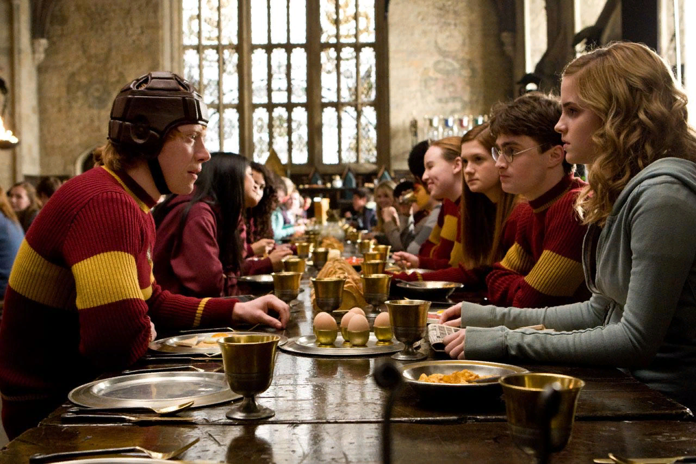
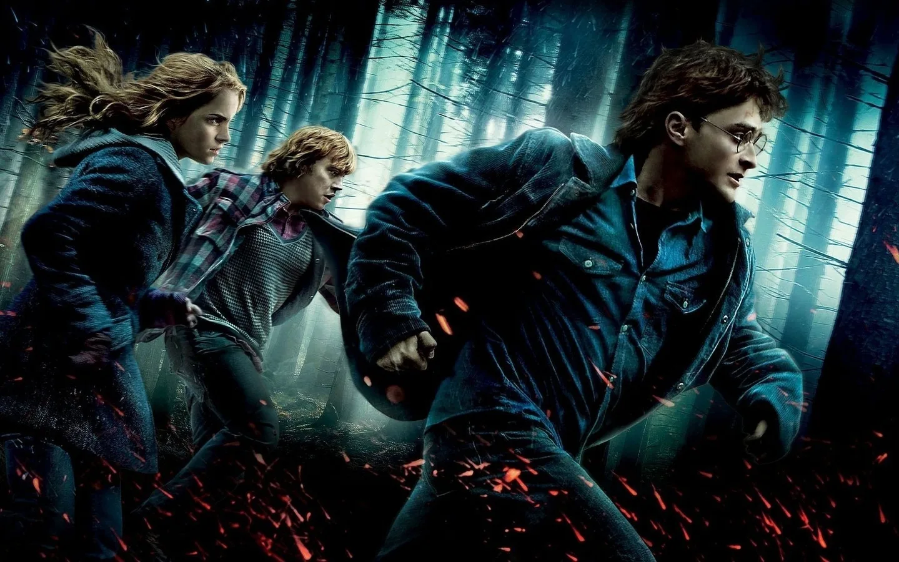

Гарри Поттер и философский камень

Жизнь десятилетнего Гарри Поттера нельзя назвать сладкой:
родители умерли, едва ему исполнился год, а от дяди и тёти, взявших сироту на воспитание,
достаются лишь тычки да подзатыльники. Но в одиннадцатый день рождения Гарри всё меняется.
Странный гость, неожиданно появившийся на пороге, приносит письмо, из которого мальчик узнаёт,
что на самом деле он - волшебник и зачислен в школу магии под названием Хогвартс.
А уже через пару недель Гарри будет мчаться в поезде Хогвартс-экспресс навстречу новой жизни
, где его ждут невероятные приключения, верные друзья и самое главное — ключ к
разгадке тайны смерти его родителей.
Гарри Поттер и тайная комната

Гарри Поттер переходит на второй курс Школы
чародейства и волшебства Хогвартс. Эльф Добби предупреждает Гарри об опасности,
которая поджидает его там, и просит больше не возвращаться в школу.
Юный волшебник не следует совету эльфа и становится свидетелем таинственных событий,
разворачивающихся в Хогвартсе. Вскоре Гарри и его друзья узнают о существовании Тайной Комнаты
и сталкиваются с новыми приключениями, пытаясь победить темные силы.
Гарри Поттер и узник Азкабана

В третьей части истории о юном волшебнике полюбившиеся всем герои — Гарри Поттер,
Рон и Гермиона — возвращаются уже на третий курс школы чародейства и волшебства Хогвартс.
На этот раз они должны раскрыть тайну узника, сбежавшего из зловещей тюрьмы Азкабан,
чье пребывание на воле создает для Гарри смертельную опасность...
Гарри Поттер и Кубок огня

Гарри Поттер, Рон и Гермиона возвращаются на четвёртый курс школы чародейства
и волшебства Хогвартс. При таинственных обстоятельствах Гарри был отобран в
число участников опасного соревнования — Турнира Трёх Волшебников, однако проблема в
том, что все его соперники — намного старше и сильнее. К тому же, знаки указывают на
возвращение Лорда Волдеморта. Вскоре Гарри предстоит побороться не только за победу в
соревновании, но и, прежде всего, за свою жизнь.
Гарри Поттер и Орден Феникса

Гарри проводит свой пятый год в школе Хогвартс и обнаруживает,
что многие из членов волшебного сообщества отрицают факт недавнего состязания
юного волшебника с воплощением вселенского зла Волдемортом. Все делают вид,
что не имеют ни малейшего представления о том, что злодей вернулся.
Однако впереди волшебников ждет необычная схватка.
Гарри Поттер и Принц-полукровка

Теперь не только мир волшебников, но и мир маглов ощущает на себе все возрастающую силу
Волан-де-Морта, а Хогвартс уже никак не назовешь надежным убежищем, каким он был раньше.
Гарри подозревает, что в самом замке затаилась некая опасность, но Дамблдор больше сосредоточен
на том, чтобы подготовить его к финальной схватке, которая, как он знает, уже не за горами.
Вместе они пытаются разгадать секрет бессмертия Волан-де-Морта, а для этого Дамблдор приглашает
на должность преподавателя по зельеварению своего старинного друга и коллегу – профессора
Горация Слизнорта, который обожает устраивать вечеринки для избранных и гордится своими
обширными связями в высших кругах...
Гарри Поттер и Дары Смерти: Часть I

Гарри Поттера ждёт самое страшное испытание
в жизни — смертельная схватка с Волан-де-Мортом.
Ждать помощи не от кого — Гарри одинок, как никогда… Друзья
и враги Гарри предстают в совершенно неожиданном свете. Граница
между Добром и Злом становится всё призрачнее…
Гарри Поттер и Дары Смерти: Часть II

В грандиозной последней главе битва между добрыми и злыми силами мира волшебников
перерастает во всеобщую войну. Ставки ещё никогда не были так высоки, а поиск убежища
– столь сложен. И быть может именно Гарри Поттеру придется пожертвовать всем в финальном
сражении с Волан-де-Мортом. Способен ли наш герой спасти мир? И всё закончится здесь.